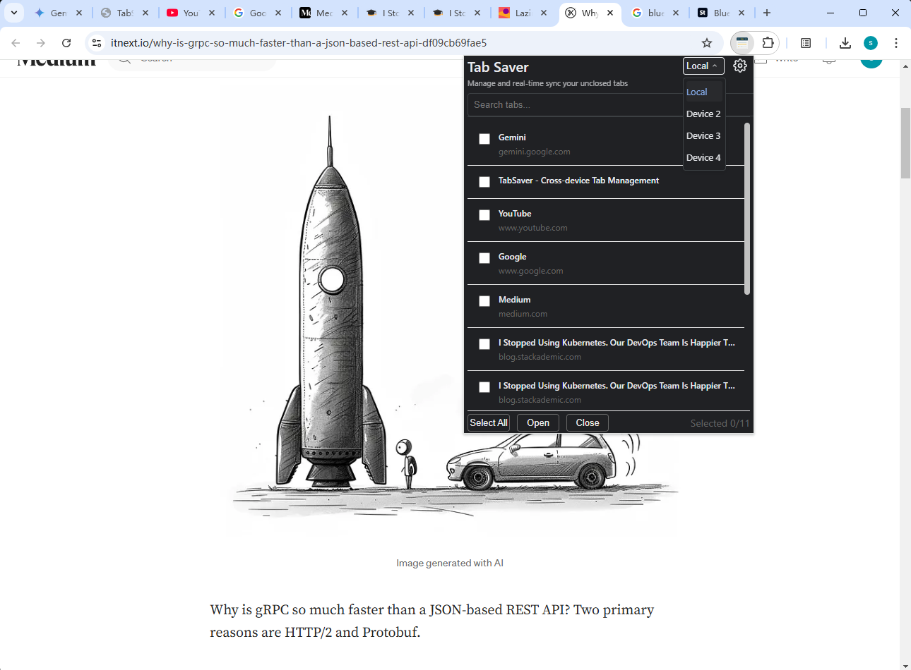
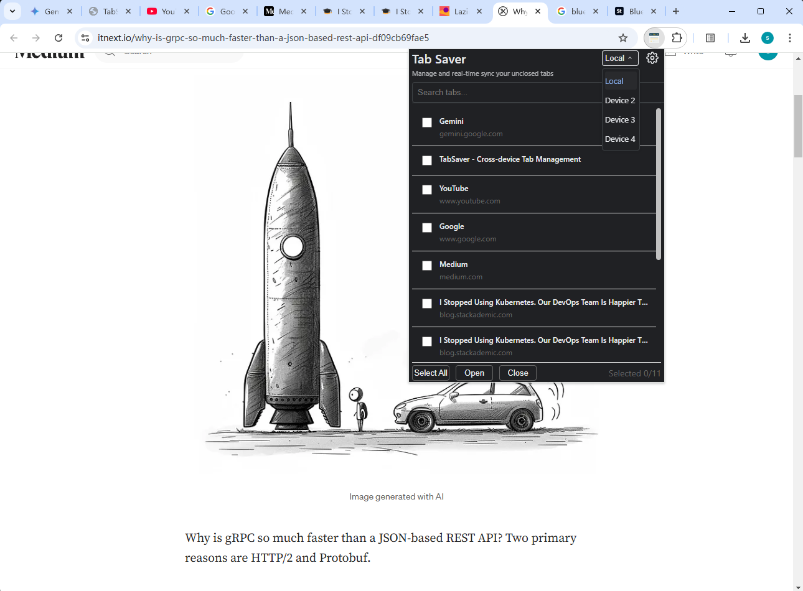

Gestión de pestañas sin esfuerzo en todos tus dispositivos
TabSaver te ayuda a gestionar, sincronizar y organizar tus pestañas del navegador sin esfuerzo en múltiples dispositivos.

 



Características clave
Sincronización entre dispositivos
Sincroniza tus pestañas sin esfuerzo en todos tus dispositivos en tiempo real.
Búsqueda inteligente
Encuentra cualquier pestaña rápidamente con nuestra función de búsqueda potente.
Operaciones por lotes
Gestiona múltiples pestañas de manera eficiente con nuestras acciones por lotes.
Soporte de temas
Elige entre temas claros, oscuros o del sistema para adaptarte a tus preferencias.
Ver TabSaver en acción
Preguntas frecuentes
¿Qué es TabSaver?
TabSaver es una potente extensión de Chrome diseñada para revolucionar tu experiencia de gestión de pestañas. Te permite:
- Sincronizar pestañas entre dispositivos
- Guardar y organizar tus pestañas del navegador
- Acceder a tus pestañas desde cualquier dispositivo con Chrome
- Buscar entre tus pestañas guardadas rápidamente
- Gestionar pestañas con una interfaz intuitiva
Ya seas estudiante, profesional o usuario casual, TabSaver te ayuda a mantenerte organizado y productivo manteniendo tus pestañas importantes a solo un clic de distancia.
¿Es gratuito TabSaver?
Sí, TabSaver es completamente gratuito. Creemos en hacer que la gestión eficiente de pestañas esté al alcance de todos.
¿Cómo se protege mi datos?
Tu datos se sincronizan de manera segura utilizando el sistema de sincronización de Chrome. No almacenamos datos personales en nuestros servidores, garantizando tu privacidad y seguridad.
¿Qué navegadores son compatibles?
Actualmente, TabSaver está disponible para Google Chrome. Estamos trabajando en llevar TabSaver a otros navegadores en el futuro.
¿Cómo comienzo?
Simplemente instala TabSaver desde la tienda de Chrome y estás listo para empezar. La extensión sincronizará tus pestañas entre dispositivos cuando estés conectado a Chrome.
¿Qué pasa con mis pestañas guardadas si desinstalo?
Tus pestañas guardadas se almacenan en el almacenamiento de sincronización de Chrome. Si desinstalas y luego reinstalas TabSaver, tus datos seguirán disponibles siempre y cuando estés utilizando la misma cuenta de Google.
¿Puedo personalizar la apariencia?
Sí. TabSaver admite temas claros y oscuros, y puede adaptarse automáticamente a tus preferencias del sistema. Puedes cambiar el tema en la página de opciones de la extensión.